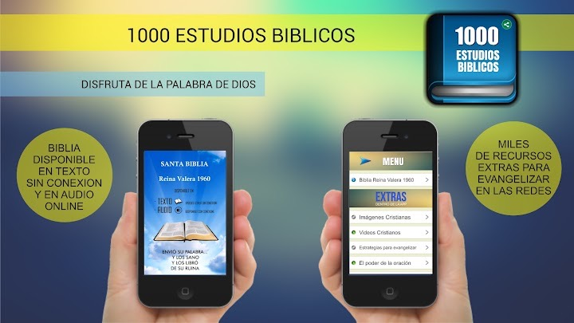
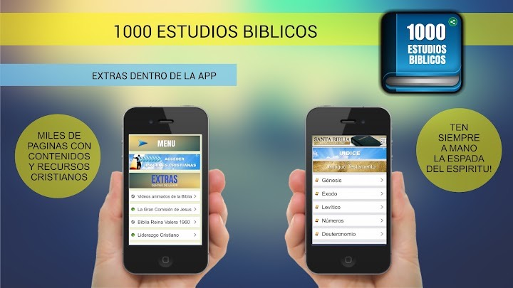
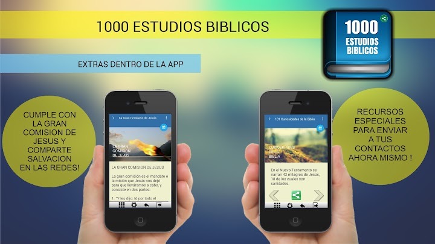
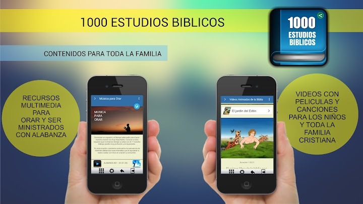

Que tu celular también te acerque a Dios
Transforma unos minutos de tu día en momentos de fe, oración y crecimiento. La Biblia Reina Valera 1960 (también sin internet) y más de 1000 estudios bíblicos, gratis en tu Android.
Descargar gratis en Google PlayApp gratuita para AndroidEsta app es para celulares Android. Si estás en iPhone, comparte esta página con alguien que tenga Android.
+500.000 descargas★ 4,8 en Google Play+4.000 opiniones
Para cada momento de tu vida, hay una Palabra de Dios
- Cuando necesitas esperanza.
- Cuando tienes preguntas y buscas respuestas.
- Cuando quieres fortalecer tu fe.
- Cuando deseas comprender mejor las Escrituras.
- O simplemente cuando quieres dedicarle unos minutos al Señor.
No necesitas esperar al domingo para profundizar en tu fe. Tu próximo momento con Dios puede comenzar hoy, estés donde estés.
Lo que vas a encontrar
Encuentra esperanza en las EscriturasLa Biblia Reina Valera 1960 completa, para leer aunque no tengas datos.
Comprende mejor la PalabraMás de 1000 estudios bíblicos, prédicas y bosquejos en un lenguaje simple.
Fortalece tu vida de oraciónDevocional «20 días con Dios», promesas por tema y recursos para compartir en familia.
También: la Biblia en audio (con conexión), imágenes cristianas para WhatsApp, recursos para líderes, jóvenes, matrimonio y evangelismo.
Empieza en 3 pasos
- Toca «Descargar gratis» y se abre Google Play.
- Instala la app: es gratuita y no pide tarjeta.
- Abre la Biblia o elige un estudio para hoy.
Así se ve en Google Play




Desliza para ver más · imágenes publicadas en la ficha oficial.
Una app que ya superó las 500.000 descargas
…la app mejor detallada y completa de educación y predicación del mensaje del Señor.Opinión publicada en Google Play
…estoy aprendiendo a conocer más de Dios gracias por esta aplicación…Opinión publicada en Google Play
Lleva la Palabra de Dios contigo
Gratis, en tu Android, para leer, escuchar y estudiar cada día.
Descargar gratis en Google Play